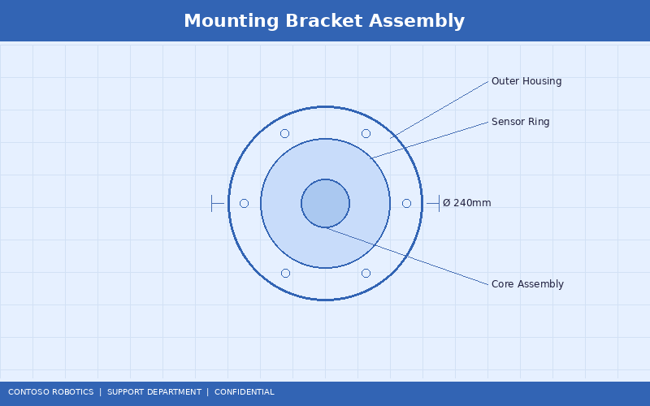
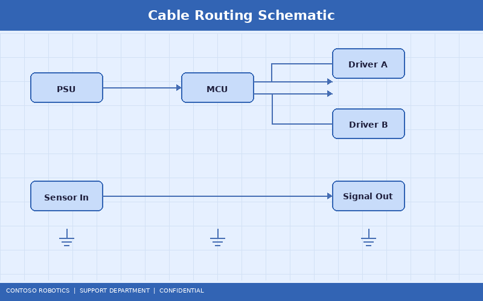
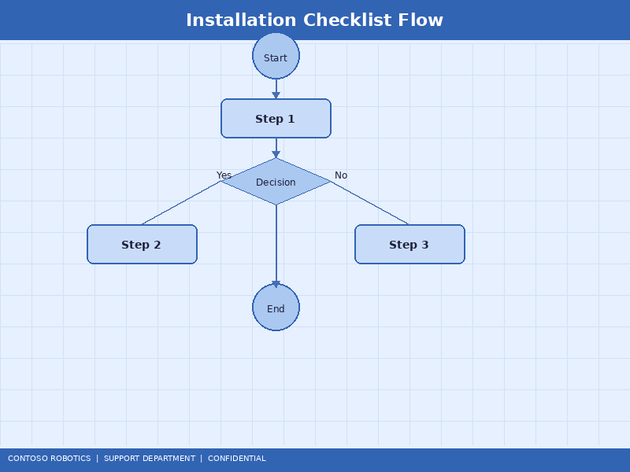

CoBot Pro Installation Manual
This manual provides complete installation instructions for the Contoso Robotics CoBot Pro 500 and CoBot Pro 700 collaborative robots. Follow each section sequentially to ensure a safe, compliant, and fully functional installation. For detailed electrical wiring diagrams beyond what is covered here, refer to the Electrical Schematics in the Engineering documentation.
1. Pre-Installation Site Assessment
Before the robot arrives on-site, complete the following assessment:
- Floor loading: The mounting surface must support a static load of at least 150 kg (robot weight + maximum payload + dynamic forces). For overhead or wall-mounted installations, consult Contoso Robotics Engineering.
- Power supply: A dedicated 200–240 V AC, 50/60 Hz, 16 A single-phase circuit with protective earth is required. The circuit must have a residual current device (RCD) rated at 30 mA.
- Network infrastructure: Provide at least one Gigabit Ethernet drop within 5 m of the control cabinet location. For real-time control applications, a dedicated VLAN is recommended.
- Environmental conditions: Operating temperature 5–45°C, humidity 20–80% non-condensing, altitude up to 2000 m without derating.
- Safety perimeter: Define the collaborative workspace boundary per ISO/TS 15066. Mark the floor with yellow safety tape.

2. Mounting the Robot Base
The CoBot Pro ships with a universal mounting bracket that supports table-top, floor, wall, and ceiling orientations.
- Select the appropriate mounting orientation. If using wall or ceiling mounting, install the optional anti-gravity spring kit (part number CB-AGS-100).
- Drill four M10 holes using the paper template included in the mounting kit. Hole depth: 35 mm minimum in steel, 50 mm in aluminum.
- Insert the alignment pins into the two guide holes.
- Place the mounting bracket over the alignment pins and hand-tighten all four M10 bolts.
- Torque the bolts in a cross pattern to 40 Nm (±2 Nm) using a calibrated torque wrench.
- Place the robot arm on the bracket and engage the three-point locking mechanism. Torque the locking ring to 25 Nm.
- Verify the mounting with a pull test: apply 500 N lateral force and confirm zero displacement.
3. Cable Routing
Proper cable routing prevents electromagnetic interference, mechanical wear, and tripping hazards.

- Route the robot-to-cabinet EtherCAT cable (CAT6a, shielded) through the cable channel on the mounting bracket. Maintain a minimum bend radius of 50 mm.
- Route the power cable separately from signal cables, maintaining at least 100 mm separation to prevent EMI.
- Route the external E-Stop cable and safety I/O cables through the dedicated safety cable conduit (orange conduit, included).
- Secure all cables at 300 mm intervals using the included cable ties and adhesive mounts.
- At the control cabinet, connect cables to the labeled terminal blocks:
- TB1: Main power input (L, N, PE)
- TB2: EtherCAT IN / OUT
- TB3: Safety I/O (E-Stop, Safety Inputs SI1–SI4, Safety Outputs SO1–SO2)
- TB4: General purpose I/O (DI1–DI8, DO1–DO8, AI1–AI2, AO1–AO2)
4. Power Connection
- Verify the facility power matches the robot requirements: 200–240 V AC, 50/60 Hz, 16 A.
- Connect the IEC C19 power cable to the control cabinet power inlet.
- Connect the other end to the dedicated circuit breaker.
- Measure the voltage at TB1 with a multimeter and confirm it is within 200–240 V AC ±10%.
- Verify the protective earth impedance is less than 0.1 Ω.
5. Network Configuration
The control cabinet has two network interfaces:
- LAN (RJ45): For facility network connectivity, remote programming via CoBot Studio IDE, and OPC-UA data exchange.
- EtherCAT (RJ45): Dedicated real-time fieldbus for joint servo communication. Do not connect to the facility LAN.
Default network settings (configurable via teach pendant or CoBot Studio IDE):
| Parameter |
Default Value |
| IP Address |
192.168.1.100 |
| Subnet Mask |
255.255.255.0 |
| Gateway |
192.168.1.1 |
| OPC-UA Port |
4840 |
| SSH Port |
22 (disabled by default) |
6. Initial Calibration
After mechanical and electrical installation, perform initial calibration:
- Power on the system and wait for CoBot OS v4.2 to boot completely.
- On the teach pendant, navigate to Settings → Calibration → Joint Calibration.
- Follow the on-screen prompts to move each joint to its reference position. The encoder index pulse is captured automatically.
- Run the Gravity Compensation Calibration wizard: the robot moves through a series of poses while measuring joint torques to build the dynamic model.
- Verify calibration accuracy by commanding the TCP to a known reference point and measuring with a dial indicator. The expected accuracy is ±0.03 mm for the CoBot Pro 500 and ±0.05 mm for the CoBot Pro 700.

7. Installation Verification Checklist
Complete every item before handing the robot to the operator:
- ☐ Mounting bolts torqued to specification
- ☐ Cable routing compliant with EMI separation requirements
- ☐ Power voltage within 200–240 V AC ±10%
- ☐ Protective earth impedance < 0.1 Ω
- ☐ EtherCAT link established (green LED solid on both ends)
- ☐ LAN network connectivity confirmed (ping test)
- ☐ Emergency stop tested from all E-Stop devices in the chain
- ☐ Safety zone configuration matches workspace layout
- ☐ Joint calibration completed with all axes within tolerance
- ☐ Gravity compensation calibration completed
- ☐ First motion test executed at 10% speed without collision
For the Safety Controller SC-100 configuration steps referenced in this checklist, see the Safety Controller SC-100 Configuration Guide in the Support documentation.
Document version 4.2.0 | Last updated: 2025-01-15 | Contoso Robotics Technical Support